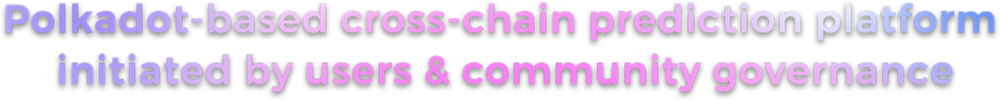

Predict DAO
"The project is a decentralized cross-chain prediction platform designed to provide diversified,Automated, safety-oriented, high-yield, socialized forecasting services, allowing usersFreely initiate predictions and governance of real events, discuss and witness togetherThe result of this interesting story is born!"